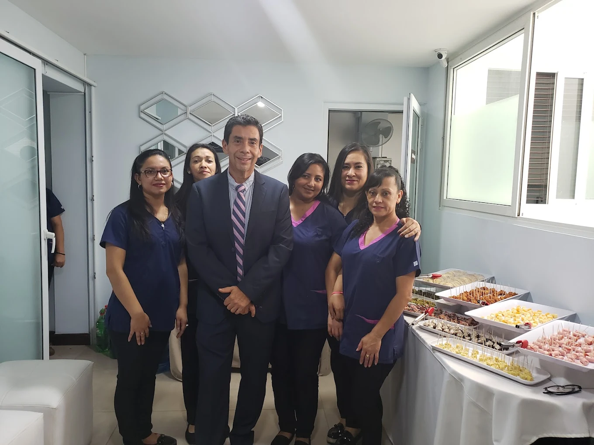

Trato cercano y confidencial
Personal de admisión cortés, respetuoso y amable. Sus preguntas son importantes y toda su información es confidencial.
Nosotros
La experiencia hace la diferencia. Conozca al Dr. Héctor Enríquez Blanco y al equipo multidisciplinario que, desde 1993, atiende las enfermedades del colon, recto y ano con tecnología avanzada y un trato humano y cercano.
Nuestra clínica
Colon y Recto S.A. es una empresa dedicada a la atención médica como centro especializado en enfermedades gastrointestinales del colon, recto y ano. Fue establecida en 1993 por médicos guatemaltecos especializados en el extranjero.
Atendemos a adultos y niños que acuden de todo el país y de países vecinos, y realizamos exámenes especiales o complejos, de difícil tratamiento, referidos de todo el país. Contamos con todos los servicios médicos especializados y tecnología avanzada —aparatos de última generación para endoscopía, manometría y ultrasonido— para el diagnóstico y el tratamiento.
1993
Año de fundación de la clínica.
+40
Años de experiencia del especialista.
+20
Años de expedientes de pacientes satisfechos.
8
Disciplinas en un mismo equipo de salud.

Sobre el doctor
Médico y cirujano con más de 40 años de experiencia, especialista en enfermedades del colon, recto y ano, en desórdenes del piso pélvico y en trastornos funcionales gastrointestinales. Profesor de Coloproctología y cirugía general, y endoscopista de colon y recto.

Trabajo en equipo
Nuestro equipo de salud trabaja bajo un proceso dinámico donde varios profesionales aplican su habilidad y destreza de forma cooperativa y complementaria, para acompañar a cada paciente de principio a fin.
Cuando su caso lo requiere, coordinamos con otras especialidades.
Terapias de apoyo para una recuperación integral.
Atención al paciente
Tratamos al paciente con delicadeza, atendiéndolo más allá de sus expectativas médicas, buscando su satisfacción física y psíquica, y no solo como una enfermedad. La atención está centrada en el paciente desde un punto de vista biopsicosocial, y toda la información es confidencial.
Personal de admisión cortés, respetuoso y amable. Sus preguntas son importantes y toda su información es confidencial.
Al llegar completa un cuestionario de síntomas. Recomendamos los exámenes diagnósticos antes de planificar cualquier tratamiento.
Entregamos todos los resultados, informes y tratamientos por escrito, con cuestionarios de seguimiento dietético, sintomático y por enfermedad.
Contamos con una línea de apoyo por WhatsApp para acompañarle también después de su procedimiento.
Parqueo propio, servicio de emergencias y protocolos de higiene y bioseguridad según el Ministerio de Salud de Guatemala.
Conocemos en detalle los tratamientos que ofrecemos y su pronóstico, con expedientes de pacientes satisfechos de más de 20 años.
Agende su cita con el Dr. Héctor Enríquez Blanco. Le atendemos con gusto y le acompañamos en cada paso de su diagnóstico y tratamiento.